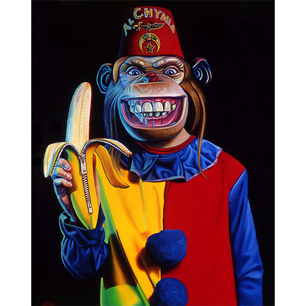
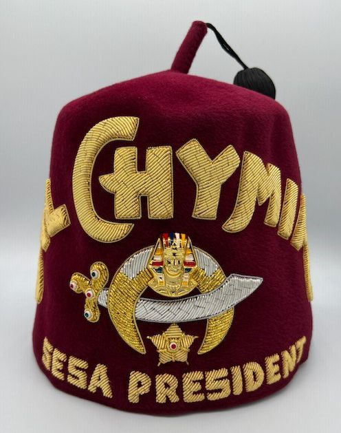
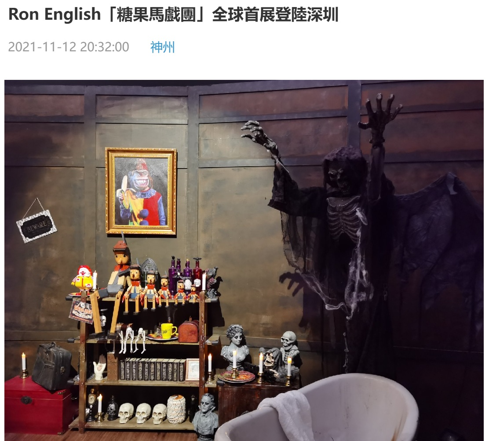

Exhibitions
Big Men in Little Cars, Tin Man Alley, New Hope, Pennsylvania, US, January 10–February 15, 1998.
Literature
Ron English, Abject Expressionism: The Art of Ron English (San Francisco: Last Gasp, 2007), p. 168. ISBN 978-0867196894.
Ron English, Original Grin: The Art of Ron English (Paris: Cernunnos, 2019), p. 101. ISBN 978-2374950938.
Notes
This work references Shriners fraternal regalia, specifically a Shrine fez.
This work appears in online coverage of Ron English’s Sugar Circus exhibition in Shenzhen.
Ancillary Documentation
The following materials document visual source imagery and image-bearing online circulation of the work.


Selected Online Circulation
Selected examples of the work’s online circulation, reproduction, or discussion. This list is not exhaustive; it is intended to document representative appearances of the image beyond formal exhibition and publication records.